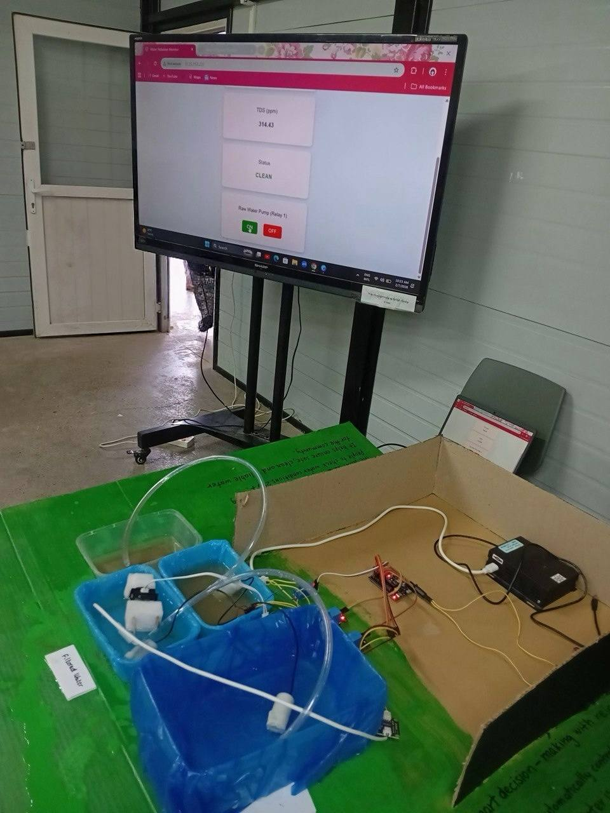
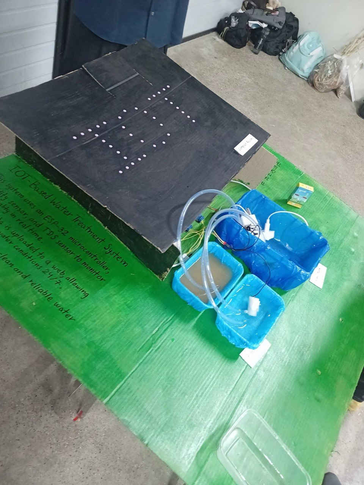
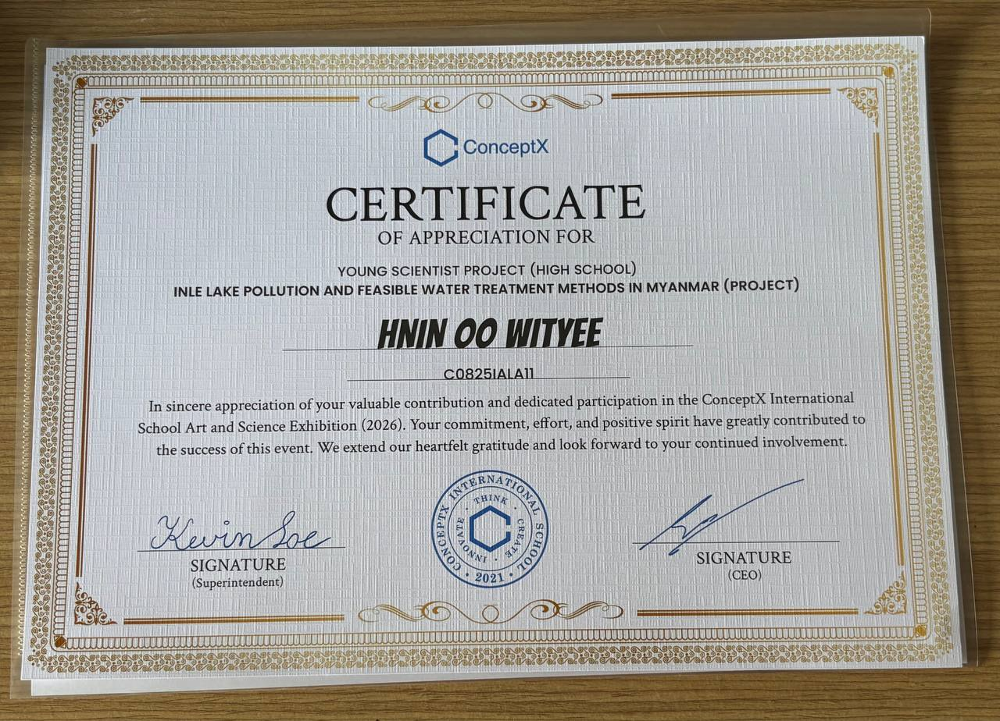

What We Built
This project started with a question about how technology could help with water pollution in Myanmar, particularly around Inle Lake. Our team explored feasible water treatment methods and built a small automated prototype to demonstrate how water quality could be monitored and routed through different stages of the system.
The prototype uses an ESP32 to read turbidity and TDS sensors and make a routing decision based on predefined thresholds. Depending on the readings, relays control different pumps so that water can either be sent back to filtration stage or moved to a storage tank.
We also connected the ESP32 to a web dashboard so that the sensor readings and system status could be viewed in real time and can be controlled remotely.
What I Worked On
This was a team project, so different parts were developed together. My work focused mainly on the electronics, programming and the connection between the physical system and the web interface.
Embedded Hardware
- Worked with the ESP32 and sensor inputs
- Connected turbidity and TDS sensors
- Worked with relays and pump control
- Helped assemble and test the physical prototype
Programming
- Worked with the C++ control logic
- Implemented threshold-based water status decisions
- Connected sensor readings to relay actions
- Worked on the ESP32 web dashboard
Testing & Debugging
- Tested the water-routing cycle
- Investigated pump and tubing problems
- Adjusted the physical tubing layout
- Tested the system again after changes
System Architecture
The physical prototype uses several small tanks connected with tubing and submersible pumps. The ESP32 sits in the middle of the system: it receives measurements from the sensors and controls the pumps through relay outputs.
Microcontroller
Handles the control logic, reads the sensors and provides the Wi-Fi connection for the web dashboard.
Turbidity Sensor
Provides an analog reading related to the cloudiness of the water. The project converts the reading into an estimated turbidity value.
TDS Sensor
Provides an analog measurement used by the project to estimate total dissolved solids.
Relay Outputs
Control the intake, re-cleaning and storage pumps used in the water-routing cycle.
Hardware Connection
Intake Pump] P26 --> R2[Relay 2
Re-clean Pump] P27 --> R3[Relay 3
Storage Pump]
How the System Makes Decisions
The control program is written in C++. The ESP32 repeatedly reads the two sensors and compares the readings with the limits we set for the prototype. If either reading is above its limit, the water is labelled as POLLUTED by the system and the re-cleaning route is activated. If both readings are within the limits, the system can route the water to storage.
Autonomous Routing Logic
Raw Water Intake]) --> B[Read Turbidity & TDS] B --> C{Above Prototype Limits?} C -- Yes --> D[Mark as POLLUTED] D --> E[Activate Re-clean Pump] E --> F[Return to Filtration] F --> B C -- No --> G[Mark as CLEAN] G --> H[Activate Storage Pump] H --> I([Move to Clean Reservoir])
Connecting Sensor Readings to Hardware
One of the parts I liked most about this project was seeing a sensor reading turn into a physical action. The basic logic is simple: read the sensors, check the limits, and then decide which relay should be active.
// Read the sensors
turbidityNTU = readTurbidityNTU();
tdsValue = readTDSppm();
// Check the prototype limits
if (turbidityNTU > NTU_LIMIT || tdsValue > TDS_LIMIT) {
waterStatus = "POLLUTED";
} else {
waterStatus = "CLEAN";
}
// Route the water
if (pump1State) {
if (turbidityNTU > NTU_LIMIT || tdsValue > TDS_LIMIT) {
digitalWrite(RELAY_PUMP2, LOW); // Re-clean
digitalWrite(RELAY_PUMP3, HIGH); // Stop storage
} else {
digitalWrite(RELAY_PUMP2, HIGH); // Stop re-cleaning
digitalWrite(RELAY_PUMP3, LOW); // Store
}
}Web Dashboard
The ESP32 also hosts a web page that displays the current sensor readings and system status. The dashboard lets us see the values without having to inspect the hardware directly.

The web dashboard during testing.
When the Hardware Didn't Cooperate
One of the most useful parts of this project happened when the code seemed to be working, but the physical system wasn't. Our pumps kept losing their prime because air was getting trapped in the tubing.
At first, this was frustrating because the relay logic was behaving as expected. We eventually realised that the problem was in the physical arrangement rather than the program. Air was collecting at high points in the tubing, and the pumps were also creating small whirlpools that could pull air into the intake.
We shortened and re-routed the tubing to reduce places where air could become trapped, and we positioned the pump intakes deeper in the tanks. After making these changes, we tested the cycle again.
This was probably the part of the project that taught me the most. With embedded systems, getting the code right is only one part of the job. The sensors, wiring, pumps, tubing and the environment all have to work together too.
Project Gallery


What I Took Away From the Project
Before this project, I mostly thought about programming and hardware as separate things. Working on the water system made me understand how closely they are connected when you're building something that has to work in the real world.
I also became more comfortable with debugging. Sometimes the answer wasn't in the code at all. We had to look at the physical setup, change something, test it, and then try again. That process made me more interested in embedded systems because there is always a connection between what the program says and what the hardware actually does.